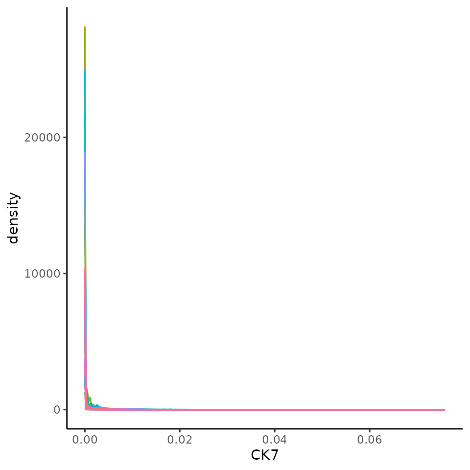
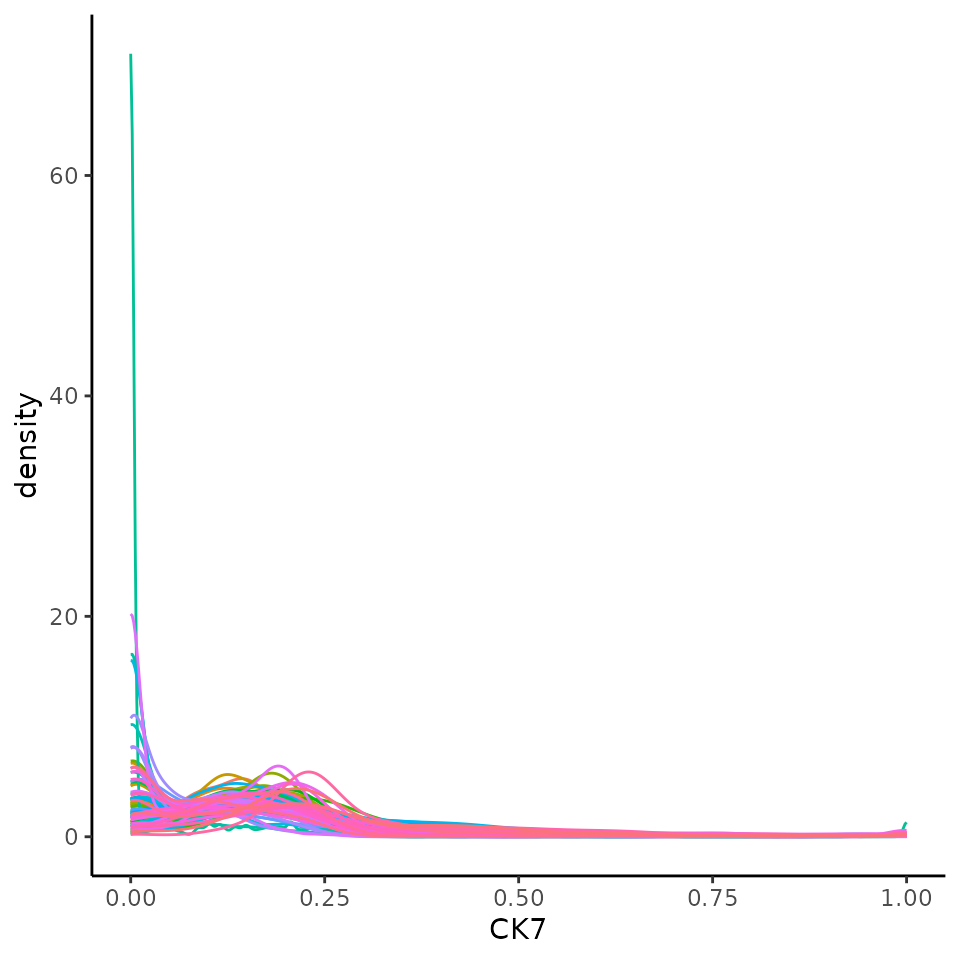
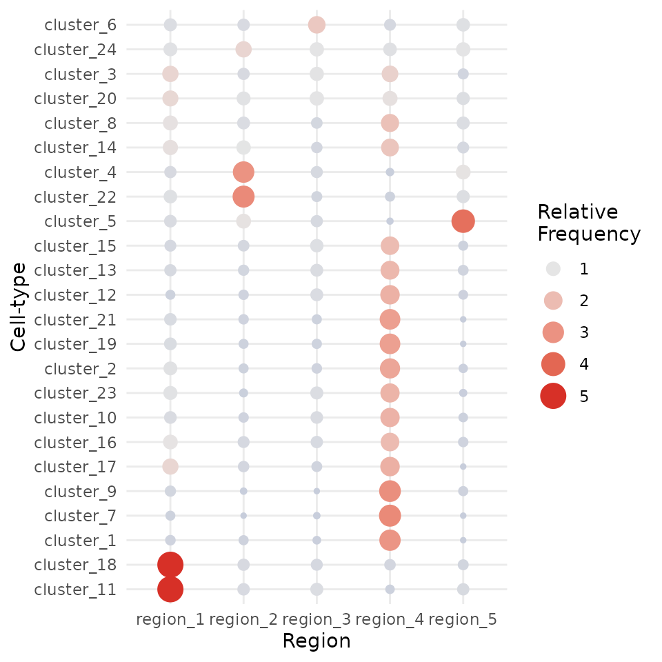

Performing a spatial analysis of multiplexed tissue imaging data.
Alexander Nicholls
Westmead Institute for Medical Research, University of Sydney, AustraliaNicholas Robertson
School of Mathematics and Statistics, University of Sydney, AustraliaNicholas Canete
Westmead Institute for Medical Research, University of Sydney, AustraliaElijah Willie
Westmead Institute for Medical Research, University of Sydney, AustraliaSchool of Mathematics and Statistics, University of Sydney, AustraliaEllis Patrick
Westmead Institute for Medical Research, University of Sydney, AustraliaSchool of Mathematics and Statistics, University of Sydney, Australia27 July, 2022
Source:vignettes/spicyWorkflow.Rmd
spicyWorkflow.RmdVersion Info
R version: R version 4.2.1 (2022-06-23)
Bioconductor version: 3.16
Understanding the interplay between different types of cells and their immediate environment is critical for understanding the mechanisms of cells themselves and their function in the context of human diseases. Recent advances in high dimensional in situ cytometry technologies have fundamentally revolutionised our ability to observe these complex cellular relationships providing an unprecedented characterisation of cellular heterogeneity in a tissue environment.
We have developed an analytical framework for analysing data from high dimensional in situ cytometry assays including CODEX, CycIF, IMC and High Definition Spatial Transcriptomics. Implemented in R, this framework makes use of functionality from our Bioconductor packages spicyR, lisaClust, treekoR, FuseSOM, simpleSeg and ClassifyR. Below we will provide an overview of key steps which are needed to interrogate the comprehensive spatial information generated by these exciting new technologies including cell segmentation, feature normalisation, cell type identification, micro-environment characterisation, spatial hypothesis testing and patient classification. Ultimately, our modular analysis framework provides a cohesive and accessible entry point into spatially resolved single cell data analysis for any R-based bioinformatics.
Global paramaters
It is convenient to set the number of cores for running code in parallel. Please choose a number that is appropriate for your resources.
nCores <- 5
BPPARAM <- simpleSeg:::generateBPParam(nCores)
theme_set(theme_classic())Context
In the following we will re-analyse some MIBI-TOF data (Risom et al, 2022) profiling the spatial landscape of ductal carcinoma in situ (DCIS), which is a pre-invasive lesion that is thought to be a precursor to invasive breast cancer (IBC). The key conclusion of this manuscript (amongst others) is that spatial information about cells can be used to predict disease progression in patients. We will use our spicy workflow to make a similar conclusion.
The R code for this analysis is available on github https://github.com/SydneyBioX/spicyWorkflow. A mildly processed version of the data used in the manuscript is available in this repository.
Read in images
The images are stored in the images folder within the data folder. Here we use readImages() from the EBImage package to read these into R. If memory is a restricting factor, and the files are in a slightly different format, you could use loadImages() from the cytomapper package to load all the tiff images into a CytoImageList object, which can store the images as h5 on-disk.
pathToImages <- "../inst/extdata/images"
# Get directories of images
imageDirs <- dir(pathToImages, full.names = TRUE)
names(imageDirs) <- dir(pathToImages, full.names = FALSE)
# Get files in each directory
files <- sapply(imageDirs, list.files, pattern = "tif", full.names = TRUE, simplify = FALSE)
# Read files with readImage from EBImage
images <- lapply(files, EBImage::readImage, as.is = TRUE)We will make use of the on_disk option to convert our images to a CytoImageList with the images not held in memory.
# Store images in a CytoImageList with images on_disk as h5 files to save memory.
dir.create("../inst/extdata/h5Files")
images <- cytomapper::CytoImageList(
images,
on_disk = TRUE,
h5FilesPath = "../inst/extdata/h5Files",
BPPARAM = BPPARAM
)
gc()## used (Mb) gc trigger (Mb) max used (Mb)
## Ncells 11239149 600.3 18709145 999.2 13696607 731.5
## Vcells 18321544 139.8 1618894190 12351.2 2017437959 15391.9Load the clinical data
To associate features in our image with disease progression, it is important to read in information which links image identifiers to their progression status. We will do this here, making sure that our imageID match. ## Read the clinical data
# Read in clinical data, manipulate imageID and select columns
clinical <- read.csv("../inst/extdata/1-s2.0-S0092867421014860-mmc1.csv")
clinical <- clinical |>
mutate(imageID = paste0("Point", PointNumber, "_pt", Patient_ID, "_", TMAD_Patient))
clinical$imageID[grep("normal", clinical$Tissue_Type)] <- paste0(clinical$imageID[grep("normal", clinical$Tissue_Type)], "_Normal")
clinicalVariables <- c("imageID", "Patient_ID", "Status", "Age", "SUBTYPE", "PAM50", "Treatment", "DCIS_grade", "Necrosis")
rownames(clinical) <- clinical$imageIDSimpleSeg: Segment the cells in the images
Our simpleSeg R package on https://github.com/SydneyBioX/simpleSeg provides a series of functions to generate simple segmentation masks of images. These functions leverage the functionality of the EBImage package on Bioconductor. For more flexibility when performing your segmentation in R we recommend learning to use the EBimage package. A key strength of the simpleSeg package is that we have coded multiple ways to perform some simple segmentation operations as well as incorporating multiple automatic procedures to optimise some key parameters when these aren’t specified.
Run simpleSeg
If your images are stored in a list or CytoImageList they can be segmented with a simple call to simpleSeg(). Here we have ask simpleSeg to do multiple things. First, we would like to use a combination of principal component analysis of all channels guided by the H33 channel to summarise the nuclei signal in the images. Secondly, to estimate the cell body of the cells we will simply dilate out from the nuclei by 2 pixels. We have also requested that the channels be square root transformed and that a minimum cell size of 40 pixels be used as a size selection step.
Visualise separation
The display and colorLabels functions in EBImage make it very easy to examine the performance of the cell segmentation. The great thing about display is that if used in an interactive session it is very easy to zoom in and out of the image.
# Visualise segmentation performance one way.
EBImage::display(colorLabels(masks[[1]]))
Visualise outlines
The plotPixels function in cytomapper make it easy to overlay the masks on top of the intensities of 6 markers. Here we can see that the segmentation appears to be performing reasonably.
# Visualise segmentation performance another way.
cytomapper::plotPixels(
image = images[1],
mask = masks[1],
img_id = "imageID",
colour_by = c("PanKRT", "GLUT1", "HH3", "CD3", "CD20"),
display = "single",
colour = list(
HH3 = c("black", "blue"),
CD3 = c("black", "purple"),
CD20 = c("black", "green"),
GLUT1 = c("black", "red"),
PanKRT = c("black", "yellow")
),
bcg = list(
HH3 = c(0, 1, 1.5),
CD3 = c(0, 1, 1.5),
CD20 = c(0, 1, 1.5),
GLUT1 = c(0, 1, 1.5),
PanKRT = c(0, 1, 1.5)
),
legend = NULL
)
Summarise cell features.
In order to characterise the phenotypes of each of the segmented cells, measureObjects from cytomapper will calculate the average intensity of each channel within each cell as well as a few morphological features. The channel intensities will be stored in the counts assay in a SingleCellExperiment. Information on the spatial location of each cell is stored in colData in the m.cx and m.cy columns. In addition to this, it will propagate the information we have store in the mcols of our CytoImageList in the colData of the resulting SingleCellExperiment.
# Summarise the expression of each marker in each cell
cells <- cytomapper::measureObjects(
masks,
images,
img_id = "imageID",
BPPARAM = BPPARAM
)Normalise data
We should check to see if the marker intensities of each cell require some form of transformation or normalisation. Here we extract the intensities from the counts assay. Looking at CK7 which should be expressed in the majority of the tumour cells, the intensities are clearly very skewed.
# Extract marker data and bind with information about images
df <- as.data.frame(cbind(colData(cells), t(assay(cells, "counts"))))
# Plots densities of CK7 for each image.
ggplot(df, aes(x = CK7, colour = imageID)) +
geom_density() +
theme(legend.position = "none")
We can transform and normalise our data using the normalizeCells function. Here we have taken the intensities from the counts assay, performed a square root transform, then for each image trimmed the 99 quantile and min-max scaled to 0-1. This modified data is then stored in the norm assay by default. We can see that this normalised data appears more bimodal, not perfectly, but likely to a sufficient degree for clustering.
# Transform and normalise the marker expression of each cell type.
# Use a square root transform, then trimmed the 99 quantile
cells <- normalizeCells(cells,
transformation = "asinh",
method = c("trim99", "minMax", "PC1"),
assayIn = "counts",
cores = nCores
)
# Extract normalised marker information.
norm_df <- as.data.frame(cbind(colData(cells), t(assay(cells, "norm"))))
# Plots densities of normalised CK7 for each image.
ggplot(norm_df, aes(x = CK7, colour = imageID)) +
geom_density() +
theme(legend.position = "none")
FuseSOM: Cluster cells into cell types
Our FuseSOM R package on https://github.com/ecool50/FuseSOM and provides a pipeline for the clustering of highly multiplexed in situ imaging cytometry assays. This pipeline uses the Self Organising Map architecture coupled with Multiview hierarchical clustering and provides functions for the estimation of the number of clusters.
Here we cluster using the runFuseSOM function. We have chosen to specify the same subset of markers used in the original manuscript for gating cell types. We have also specified the number of clusters to identify to be numClusters = 24. In addition to this, while FuseSOM can automatically estimate a grid size for the self organising map.
Perform the clustering
# The markers used in the original publication to gate cell types.
useMarkers <- c(
"PanKRT", "ECAD", "CK7", "VIM", "FAP", "CD31", "CK5", "SMA",
"CD45", "CD4", "CD3", "CD8", "CD20", "CD68", "CD14", "CD11c",
"HLADRDPDQ", "MPO", "Tryptase"
)
# Set seed.
set.seed(51773)
# Generate SOM and cluster cells into 20 groups.
cells <- runFuseSOM(
cells,
markers = useMarkers,
assay = "norm",
numClusters = 24
)Attempt to interpret the phenotype of each cluster
We can begin the process of understanding what each of these cell clusters are by using the plotGroupedHeatmap function from scater. At the least, here we can see we capture all the major immune populations that we expect to see.
# Visualise marker expression in each cluster.
scater::plotGroupedHeatmap(
cells,
features = useMarkers,
group = "clusters",
exprs_values = "norm",
center = TRUE,
scale = TRUE,
zlim = c(-3, 3),
cluster_rows = FALSE
)
Check how many clusters should be used.
We can check to see how reasonable our choice of 24 clusters is using the estimateNumCluster and the optiPlot functions. Here we examine the Gap method, others such as Silhouette and Within Cluster Distance are also available.
As we can be seen below, we chose the second elbow point as the optimal number of clusters.
# Generate metrics for estimating the number of clusters.
# As I've already run runFuseSOM I don't need to run generateSOM().
cells <- estimateNumCluster(cells, kSeq = 2:30)
optiPlot(cells, method = "gap")
Check cluster frequencies
We find it always useful to check the number of cells in each cluster. Here we can see that cluster 4 is contains lots of (most likely tumour) cells and cluster 16 contains very few cells.
##
## cluster_7 cluster_17 cluster_12 cluster_8 cluster_10 cluster_3 cluster_2
## 227 524 535 595 799 823 833
## cluster_18 cluster_13 cluster_15 cluster_16 cluster_19 cluster_21 cluster_1
## 889 1053 1061 1086 1351 1428 1556
## cluster_23 cluster_24 cluster_11 cluster_14 cluster_5 cluster_6 cluster_20
## 1566 1737 1981 4032 4559 4833 7167
## cluster_22 cluster_9 cluster_4
## 8166 8911 17902Dimension reduction
As our data is stored in a SingleCellExperiment we can also use scater to perform and visualise our data in a lower dimension to look for cluster differences.
set.seed(51773)
# Perform dimension reduction using UMP.
cells <- scater::runUMAP(
cells,
subset_row = useMarkers,
exprs_values = "norm"
)
# Select a subset of images to plot.
someImages <- unique(colData(cells)$imageID)[c(1, 10, 20, 40, 50, 60)]
# UMAP by cell type cluster.
scater::plotReducedDim(
cells[, colData(cells)$imageID %in% someImages],
dimred = "UMAP",
colour_by = "clusters"
)
Test For association between the proportion of each cell type and progression status
We recommend using a package such as diffcyt for testing for changes in abundance of cell types. However, the colTest function allows us to quickly test for associations between the proportions of the cell types and progression status using either Wilcoxon rank sum tests or t-tests. Here we see a p-value less than 0.05, but this does not equate to a small FDR.
# Select cells which belong to individuals with progressor status.
cellsToUse <- cells$Status %in% c("nonprogressor", "progressor")
# Perform simple wicoxon rank sum tests on the columns of the proportion matrix.
testProp <- colTest(cells[, cellsToUse],
condition = "Status",
feature = "clusters"
)
testProp## mean in group nonprogressor mean in group progressor t pval
## cluster_4 0.2600 0.2100 2.00000 0.057
## cluster_3 0.0130 0.0031 1.80000 0.079
## cluster_23 0.0240 0.0160 1.70000 0.095
## cluster_21 0.0220 0.0180 1.50000 0.140
## cluster_6 0.0700 0.0530 1.50000 0.140
## cluster_19 0.0180 0.0140 1.50000 0.150
## cluster_5 0.0500 0.0900 -1.20000 0.240
## cluster_2 0.0089 0.0130 -1.20000 0.260
## cluster_11 0.0260 0.0220 0.94000 0.360
## cluster_13 0.0120 0.0250 -0.92000 0.370
## cluster_10 0.0110 0.0083 0.88000 0.390
## cluster_24 0.0170 0.0210 -0.77000 0.450
## cluster_17 0.0052 0.0042 0.62000 0.540
## cluster_20 0.0940 0.1100 -0.58000 0.570
## cluster_12 0.0062 0.0070 -0.56000 0.580
## cluster_7 0.0044 0.0030 0.55000 0.590
## cluster_8 0.0072 0.0110 -0.52000 0.610
## cluster_18 0.0140 0.0160 -0.41000 0.680
## cluster_15 0.0140 0.0150 -0.36000 0.720
## cluster_9 0.1300 0.1400 -0.35000 0.730
## cluster_16 0.0130 0.0150 -0.32000 0.750
## cluster_14 0.0500 0.0520 -0.21000 0.840
## cluster_22 0.1100 0.1100 -0.13000 0.900
## cluster_1 0.0220 0.0220 0.00068 1.000
## adjPval cluster
## cluster_4 0.60 cluster_4
## cluster_3 0.60 cluster_3
## cluster_23 0.60 cluster_23
## cluster_21 0.60 cluster_21
## cluster_6 0.60 cluster_6
## cluster_19 0.60 cluster_19
## cluster_5 0.78 cluster_5
## cluster_2 0.78 cluster_2
## cluster_11 0.85 cluster_11
## cluster_13 0.85 cluster_13
## cluster_10 0.85 cluster_10
## cluster_24 0.86 cluster_24
## cluster_17 0.86 cluster_17
## cluster_20 0.86 cluster_20
## cluster_12 0.86 cluster_12
## cluster_7 0.86 cluster_7
## cluster_8 0.86 cluster_8
## cluster_18 0.86 cluster_18
## cluster_15 0.86 cluster_15
## cluster_9 0.86 cluster_9
## cluster_16 0.86 cluster_16
## cluster_14 0.92 cluster_14
## cluster_22 0.94 cluster_22
## cluster_1 1.00 cluster_1
imagesToUse <- rownames(clinical)[clinical[, "Status"] %in% c("nonprogressor", "progressor")]
prop <- getProp(cells, feature = "clusters")
clusterToUse <- rownames(testProp)[1]
boxplot(prop[imagesToUse, clusterToUse] ~ clinical[imagesToUse, "Status"])
spicyR: test spatial relationships
Our spicyR package (https://www.bioconductor.org/packages/devel/bioc/html/spicyR.html)[https://www.bioconductor.org/packages/devel/bioc/html/spicyR.html] provides a series of functions to aid in the analysis of both immunofluorescence and mass cytometry imaging data as well as other assays that can deeply phenotype individual cells and their spatial location. Here we use the spicy function to test for changes in the spatial relationships between pair-wise combinations of cells. We quantify spatial relationships using a combination of three radii Rs = c(20, 50, 100) and mildly account for some global tissue structure using sigma = 50.
# Test for changes in pair-wise spatial relationships between cell types.
spicyTest <- spicy(
cells[, cellsToUse],
condition = "Status",
cellType = "clusters",
imageID = "imageID",
spatialCoords = c("m.cx", "m.cy"),
Rs = c(20, 50, 100),
sigma = 50,
BPPARAM = BPPARAM
)
topPairs(spicyTest, n = 10)## intercept coefficient p.value adj.pvalue
## cluster_5__cluster_22 9.838579 -84.02047 0.0006791420 0.1980147
## cluster_22__cluster_5 6.254983 -80.64849 0.0008276133 0.1980147
## cluster_2__cluster_5 -113.953657 100.83674 0.0013735911 0.1980147
## cluster_15__cluster_5 -110.432852 84.75543 0.0015096005 0.1980147
## cluster_16__cluster_10 52.794036 199.62803 0.0021536315 0.1980147
## cluster_20__cluster_12 -105.417617 62.57199 0.0022284503 0.1980147
## cluster_24__cluster_1 -136.885464 104.36336 0.0027109665 0.1980147
## cluster_5__cluster_2 -110.297888 87.45499 0.0029273855 0.1980147
## cluster_12__cluster_20 -106.980850 62.11234 0.0030939796 0.1980147
## cluster_1__cluster_24 -137.604828 109.90055 0.0044551304 0.2499344
## from to
## cluster_5__cluster_22 cluster_5 cluster_22
## cluster_22__cluster_5 cluster_22 cluster_5
## cluster_2__cluster_5 cluster_2 cluster_5
## cluster_15__cluster_5 cluster_15 cluster_5
## cluster_16__cluster_10 cluster_16 cluster_10
## cluster_20__cluster_12 cluster_20 cluster_12
## cluster_24__cluster_1 cluster_24 cluster_1
## cluster_5__cluster_2 cluster_5 cluster_2
## cluster_12__cluster_20 cluster_12 cluster_20
## cluster_1__cluster_24 cluster_1 cluster_24We can visualise these tests using signifPlot where we observe that cell type pairs appear to become less attractive (or avoid more) in the progression sample.
# Visualise which relationships are changing the most.
signifPlot(
spicyTest,
breaks = c(-1.5, 3, 0.5)
)
lisaClust: Find cellular neighbourhoods
Our lisaClust package (https://www.bioconductor.org/packages/devel/bioc/html/lisaClust.html)[https://www.bioconductor.org/packages/devel/bioc/html/lisaClust.html] provides a series of functions to identify and visualise regions of tissue where spatial associations between cell-types is similar. This package can be used to provide a high-level summary of cell-type co-localisation in multiplexed imaging data that has been segmented at a single-cell resolution. Here we use the lisaClust function to clusters cells into 5 regions with distinct spatial ordering.
set.seed(51773)
# Cluster cells into spatial regions with similar composition.
cells <- lisaClust(
cells,
k = 5,
Rs = c(20, 50, 100),
sigma = 50,
spatialCoords = c("m.cx", "m.cy"),
cellType = "clusters",
BPPARAM = BPPARAM
)Region - cell type enrichment heatmap
We can try to interpret which spatial orderings the regions are quantifying using the regionMap function. This plots the frequency of each cell type in a region relative to what you would expect by chance.
# Visualise the enrichment of each cell type in each region
regionMap(cells, cellType = "clusters", limit = c(0.2, 5))
Visualise regions
By default, these identified regions are stored in the regions column in the colData of our object. We can quickly examine the spatial arrangement of these regions using ggplot.
# Extract cell information and filter to specific image.
df <- colData(cells) |>
as.data.frame() |>
filter(imageID == "Point2206_pt1116_31620")
# Colour cells by their region.
ggplot(df, aes(x = m.cx, y = m.cy, colour = region)) +
geom_point()
While much slower, we have also implemented a function for overlaying the region information as a hatching pattern so that the information can be viewed simultaneously with the cell type calls.
# Use hatching to visualise regions and cell types.
hatchingPlot(
cells,
useImages = "Point2206_pt1116_31620",
cellType = "clusters",
spatialCoords = c("m.cx", "m.cy")
)This plot is a ggplot object and so the scale can be modified with scale_region_manual.
# Use hatching to visualise regions and cell types.
# Relabel the hatching of the regions.
hatchingPlot(
cells,
useImages = "Point2206_pt1116_31620",
cellType = "clusters",
spatialCoords = c("m.cx", "m.cy"),
window = "square",
nbp = 300,
line.spacing = 41
) +
scale_region_manual(values = c(
region_1 = 2,
region_2 = 1,
region_3 = 5,
region_4 = 4,
region_5 = 3
)) +
guides(colour = guide_legend(ncol = 2))
Test for association with progression
If needed, we can again quickly use the colTest function to test for associations between the proportions of the cells in each region and progression status using either Wilcoxon rank sum tests or t-tests. Here we see an adjusted p-value less than 0.05.
# Test if the proportion of each region is associated
# with progression status.
testRegion <- colTest(
cells[, cellsToUse],
feature = "region",
condition = "Status"
)
testRegion## mean in group nonprogressor mean in group progressor t pval
## region_1 0.40 0.35 1.500 0.14
## region_4 0.20 0.24 -1.200 0.26
## region_3 0.10 0.13 -0.930 0.36
## region_2 0.15 0.14 0.360 0.73
## region_5 0.15 0.15 -0.042 0.97
## adjPval cluster
## region_1 0.60 region_1
## region_4 0.60 region_4
## region_3 0.60 region_3
## region_2 0.91 region_2
## region_5 0.97 region_5ClassifyR: Classification
Our ClassifyR package, https://github.com/SydneyBioX/ClassifyR, formalises a convenient framework for evaluating classification in R. We provide functionality to easily include four key modelling stages; Data transformation, feature selection, classifier training and prediction; into a cross-validation loop. Here we use the crossValidate function to perform 100 repeats of 5-fold cross-validation to evaluate the performance of an elastic net model applied to three quantification of our MIBI-TOF data; cell type proportions, average mean of each cell type and region proportions.
# Create list to store data.frames
data <- list()
# Add proportions of each cell type in each image
data[["props"]] <- getProp(cells, "clusters")
# Add pair-wise associations
data[["dist"]] <- getPairwise(
cells,
spatialCoords = c("m.cx", "m.cy"),
cellType = "clusters",
Rs = c(20, 50, 100),
sigma = 50,
BPPARAM = BPPARAM
)
data[["dist"]] <- as.data.frame(data[["dist"]])
# Add proportions of each region in each image
# to the list of dataframes.
data[["regions"]] <- getProp(cells, "region")
# Subset data images with progression status and NA clinical variables.
measurements <- lapply(data, function(x) x[imagesToUse, ])
# Set seed
set.seed(51773)
# Perform cross-validation of an elastic net model
# with 100 repeats of 5-fold cross-validation.
cv <- crossValidate(
measurements = measurements,
outcome = clinical[imagesToUse, "Status"],
classifier = "GLM",
nFolds = 5,
nRepeats = 100,
nCores = nCores
)Visualise cross-validated prediction performance
Here we use the performancePlot function to assess the AUC from each repeat of the 5-fold cross-validation. We see that the lisaClust regions appear to capture information which is predictive of progression status of the patients.
# Calculate AUC for each cross-validation repeat and plot.
performancePlot(
cv,
metric = "AUC",
characteristicsList = list(x = "Assay Name")
)
Summary
Here we have used a pipeline of our spatial analysis R packages to demonstrate an easy way to segment, cluster, normalise, quantify and classify high dimensional in situ cytometry data all within R.
sessionInfo
## R version 4.2.1 (2022-06-23)
## Platform: x86_64-pc-linux-gnu (64-bit)
## Running under: Debian GNU/Linux 11 (bullseye)
##
## Matrix products: default
## BLAS: /usr/lib/x86_64-linux-gnu/openblas-pthread/libblas.so.3
## LAPACK: /usr/lib/x86_64-linux-gnu/openblas-pthread/libopenblasp-r0.3.13.so
##
## locale:
## [1] LC_CTYPE=C.UTF-8 LC_NUMERIC=C LC_TIME=C.UTF-8
## [4] LC_COLLATE=C.UTF-8 LC_MONETARY=C.UTF-8 LC_MESSAGES=C.UTF-8
## [7] LC_PAPER=C.UTF-8 LC_NAME=C LC_ADDRESS=C
## [10] LC_TELEPHONE=C LC_MEASUREMENT=C.UTF-8 LC_IDENTIFICATION=C
##
## attached base packages:
## [1] stats4 stats graphics grDevices utils datasets methods
## [8] base
##
## other attached packages:
## [1] lisaClust_1.6.3 ClassifyR_3.3.17
## [3] survival_3.5-0 BiocParallel_1.32.4
## [5] MultiAssayExperiment_1.24.0 generics_0.1.3
## [7] spicyR_1.10.7 scater_1.26.1
## [9] scuttle_1.8.0 ggpubr_0.5.0
## [11] FuseSOM_1.0.1 simpleSeg_1.1.1
## [13] ggplot2_3.4.1 dplyr_1.1.0
## [15] cytomapper_1.10.1 SingleCellExperiment_1.20.1
## [17] SummarizedExperiment_1.28.0 Biobase_2.58.0
## [19] GenomicRanges_1.50.2 GenomeInfoDb_1.34.9
## [21] IRanges_2.32.0 S4Vectors_0.36.1
## [23] BiocGenerics_0.44.0 MatrixGenerics_1.10.0
## [25] matrixStats_0.63.0 EBImage_4.40.0
## [27] BiocStyle_2.26.0
##
## loaded via a namespace (and not attached):
## [1] prabclus_2.3-2 SpatialExperiment_1.8.1
## [3] princurve_2.1.6 R.methodsS3_1.8.2
## [5] profileModel_0.6.1 ragg_1.2.5
## [7] tidyr_1.2.1 bit64_4.0.5
## [9] knitr_1.42 irlba_2.3.5.1
## [11] DelayedArray_0.24.0 R.utils_2.12.2
## [13] data.table_1.14.4 KEGGREST_1.38.0
## [15] RCurl_1.98-1.10 ScaledMatrix_1.6.0
## [17] cowplot_1.1.1 terra_1.7-3
## [19] RSQLite_2.2.20 proxy_0.4-27
## [21] bit_4.0.5 spatstat.data_3.0-0
## [23] httpuv_1.6.8 viridis_0.6.2
## [25] xfun_0.36 jquerylib_0.1.4
## [27] evaluate_0.20 promises_1.2.0.1
## [29] DEoptimR_1.0-11 fansi_1.0.4
## [31] DBI_1.1.3 htmlwidgets_1.6.2
## [33] spatstat.geom_3.0-3 purrr_1.0.0
## [35] ellipsis_0.3.2 backports_1.4.1
## [37] brglm_0.7.2 bookdown_0.33
## [39] permute_0.9-7 annotate_1.76.0
## [41] svgPanZoom_0.3.4 deldir_1.0-6
## [43] sparseMatrixStats_1.10.0 vctrs_0.5.2
## [45] abind_1.4-5 cachem_1.0.7
## [47] withr_2.5.0 ggforce_0.4.1
## [49] robustbase_0.95-1 vegan_2.6-4
## [51] mclust_6.0.0 goftest_1.2-3
## [53] mnormt_2.1.1 svglite_2.1.1
## [55] cluster_2.1.4 crayon_1.5.2
## [57] genefilter_1.80.0 spatstat.explore_3.0-5
## [59] edgeR_3.40.0 pkgconfig_2.0.3
## [61] labeling_0.4.2 tweenr_2.0.2
## [63] nlme_3.1-162 vipor_0.4.5
## [65] nnet_7.3-18 diptest_0.76-0
## [67] rlang_1.0.6 lifecycle_1.0.3
## [69] rsvd_1.0.5 rprojroot_2.0.3
## [71] polyclip_1.10-4 tiff_0.1-11
## [73] Matrix_1.5-3 raster_3.6-14
## [75] carData_3.0-5 Rhdf5lib_1.20.0
## [77] boot_1.3-28.1 beeswarm_0.4.0
## [79] pheatmap_1.0.12 png_0.1-8
## [81] viridisLite_0.4.1 rjson_0.2.21
## [83] bitops_1.0-7 shinydashboard_0.7.2
## [85] R.oo_1.25.0 rhdf5filters_1.10.0
## [87] Biostrings_2.66.0 blob_1.2.4
## [89] DelayedMatrixStats_1.20.0 stringr_1.5.0
## [91] spatstat.random_3.0-1 jpeg_0.1-10
## [93] rstatix_0.7.2 gridGraphics_0.5-1
## [95] ggsignif_0.6.4 beachmat_2.14.0
## [97] scales_1.2.1 memoise_2.0.1
## [99] magrittr_2.0.3 plyr_1.8.8
## [101] zlibbioc_1.44.0 compiler_4.2.1
## [103] dqrng_0.3.0 concaveman_1.1.0
## [105] RColorBrewer_1.1-3 lme4_1.1-32
## [107] cli_3.6.1 XVector_0.38.0
## [109] DataVisualizations_1.2.3 lmerTest_3.1-3
## [111] MASS_7.3-58.2 mgcv_1.8-41
## [113] tidyselect_1.2.0 stringi_1.7.8
## [115] textshaping_0.3.6 highr_0.10
## [117] yaml_2.3.7 BiocSingular_1.14.0
## [119] locfit_1.5-9.7 ggrepel_0.9.3
## [121] grid_4.2.1 sass_0.4.5
## [123] tools_4.2.1 parallel_4.2.1
## [125] gridExtra_2.3 farver_2.1.1
## [127] DropletUtils_1.18.0 digest_0.6.31
## [129] BiocManager_1.30.20 shiny_1.7.4
## [131] fpc_2.2-10 Rcpp_1.0.10
## [133] car_3.1-2 broom_1.0.4
## [135] analogue_0.17-6 later_1.3.0
## [137] scam_1.2-13 RcppAnnoy_0.0.20
## [139] AnnotationDbi_1.60.2 httr_1.4.5
## [141] psych_2.3.3 kernlab_0.9-32
## [143] colorspace_2.1-0 XML_3.99-0.14
## [145] fs_1.6.1 tensor_1.5
## [147] splines_4.2.1 uwot_0.1.14
## [149] yulab.utils_0.0.6 spatstat.utils_3.0-1
## [151] pkgdown_2.0.7 sp_1.5-1
## [153] ggplotify_0.1.0 flexmix_2.3-19
## [155] systemfonts_1.0.4 xtable_1.8-4
## [157] jsonlite_1.8.4 nloptr_2.0.3
## [159] FCPS_1.3.1 modeltools_0.2-23
## [161] R6_2.5.1 pillar_1.9.0
## [163] htmltools_0.5.4 mime_0.12
## [165] nnls_1.4 glue_1.6.2
## [167] fastmap_1.1.1 minqa_1.2.5
## [169] BiocNeighbors_1.16.0 fftwtools_0.9-11
## [171] class_7.3-20 codetools_0.2-18
## [173] utf8_1.2.3 lattice_0.20-45
## [175] bslib_0.4.2 spatstat.sparse_3.0-0
## [177] tibble_3.2.0 numDeriv_2016.8-1.1
## [179] ggbeeswarm_0.7.1 magick_2.7.4
## [181] limma_3.54.1 rmarkdown_2.21
## [183] desc_1.4.2 munsell_0.5.0
## [185] fastcluster_1.2.3 rhdf5_2.42.0
## [187] GenomeInfoDbData_1.2.9 HDF5Array_1.26.0
## [189] reshape2_1.4.4 gtable_0.3.1
## [191] coop_0.6-3